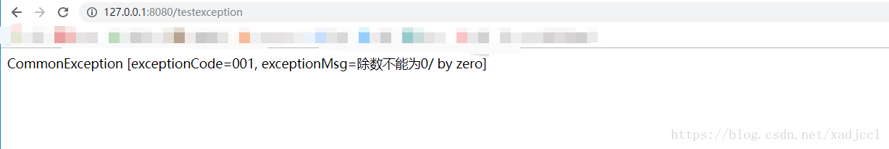

<!DOCTYPE html>
<html>
<head><meta name="generator" content="Hexo 3.8.0">
  <meta charset="utf-8">

  <!-- PACE Progress Bar START -->
  
    <script src="https://raw.githubusercontent.com/HubSpot/pace/v1.0.2/pace.min.js"></script>
    <link rel="stylesheet" href="https://github.com/HubSpot/pace/raw/master/themes/orange/pace-theme-flash.css">
  
  

  <!-- PACE Progress Bar START -->

  
  <title>(七)springboot统一异常处理 | xadjccl</title>
  <meta name="viewport" content="width=device-width, initial-scale=1, maximum-scale=1">
  
  <meta name="keywords" content="SpringBoot">
  
  
  
  
  <meta name="description" content="概述&amp;#160; &amp;#160; &amp;#160; &amp;#160;在我们项目中，运行时异常是非常容易出现的，前端页面进行请求如果发生异常会把异常的信息直接显示在前端页面上，这可能会导致一些敏感信息泄露，而且默认的异常信息一般也不好看，对我们排查问题也不是很方便，所以在项目中使用 统一的异常处理是非常有必要的。话不多说，直接上代码。">
<meta name="keywords" content="SpringBoot">
<meta property="og:type" content="article">
<meta property="og:title" content="(七)SpringBoot统一异常处理">
<meta property="og:url" content="http://yoursite.com/2019/01/29/(七)SpringBoot统一异常处理/index.html">
<meta property="og:site_name" content="xadjccl">
<meta property="og:description" content="概述&amp;#160; &amp;#160; &amp;#160; &amp;#160;在我们项目中，运行时异常是非常容易出现的，前端页面进行请求如果发生异常会把异常的信息直接显示在前端页面上，这可能会导致一些敏感信息泄露，而且默认的异常信息一般也不好看，对我们排查问题也不是很方便，所以在项目中使用 统一的异常处理是非常有必要的。话不多说，直接上代码。">
<meta property="og:locale" content="zh-CN">
<meta property="og:image" content="http://yoursite.com/resource/image/SpringBootLogo.jpg">
<meta property="og:updated_time" content="2019-01-29T07:07:29.827Z">
<meta name="twitter:card" content="summary">
<meta name="twitter:title" content="(七)SpringBoot统一异常处理">
<meta name="twitter:description" content="概述&amp;#160; &amp;#160; &amp;#160; &amp;#160;在我们项目中，运行时异常是非常容易出现的，前端页面进行请求如果发生异常会把异常的信息直接显示在前端页面上，这可能会导致一些敏感信息泄露，而且默认的异常信息一般也不好看，对我们排查问题也不是很方便，所以在项目中使用 统一的异常处理是非常有必要的。话不多说，直接上代码。">
<meta name="twitter:image" content="http://yoursite.com/resource/image/SpringBootLogo.jpg">
  
    <link rel="alternate" href="/atom.xml" title="xadjccl" type="application/atom+xml">
  
  <link rel="icon" href="/css/images/favicon.ico">
  
    <link href="//fonts.googleapis.com/css?family=Source+Code+Pro" rel="stylesheet" type="text/css">
  
  <link href="https://fonts.googleapis.com/css?family=Open+Sans|Montserrat:700" rel="stylesheet" type="text/css">
  <link href="https://fonts.googleapis.com/css?family=Roboto:400,300,300italic,400italic" rel="stylesheet" type="text/css">
  <link href="https://cdn.bootcss.com/font-awesome/4.6.3/css/font-awesome.min.css" rel="stylesheet">
  <style type="text/css">
    @font-face{font-family:futura-pt;src:url(https://use.typekit.net/af/9749f0/00000000000000000001008f/27/l?subset_id=2&fvd=n5) format("woff2");font-weight:500;font-style:normal;}
    @font-face{font-family:futura-pt;src:url(https://use.typekit.net/af/90cf9f/000000000000000000010091/27/l?subset_id=2&fvd=n7) format("woff2");font-weight:500;font-style:normal;}
    @font-face{font-family:futura-pt;src:url(https://use.typekit.net/af/8a5494/000000000000000000013365/27/l?subset_id=2&fvd=n4) format("woff2");font-weight:lighter;font-style:normal;}
    @font-face{font-family:futura-pt;src:url(https://use.typekit.net/af/d337d8/000000000000000000010095/27/l?subset_id=2&fvd=i4) format("woff2");font-weight:400;font-style:italic;}</style>
    
  <link rel="stylesheet" id="athemes-headings-fonts-css" href="//fonts.googleapis.com/css?family=Yanone+Kaffeesatz%3A200%2C300%2C400%2C700&amp;ver=4.6.1" type="text/css" media="all">
  <link rel="stylesheet" href="/css/style.css">

  <script src="https://code.jquery.com/jquery-3.1.1.min.js"></script>

  <!-- Bootstrap core CSS -->
  <link rel="stylesheet" href="https://netdna.bootstrapcdn.com/bootstrap/3.0.2/css/bootstrap.min.css">
  <link rel="stylesheet" href="/css/hiero.css">
  <link rel="stylesheet" href="/css/glyphs.css">
  

  <!-- Custom CSS -->
  <link rel="stylesheet" href="/css/my.css">
  <!-- Google Adsense -->
  
  <script async src="//pagead2.googlesyndication.com/pagead/js/adsbygoogle.js"></script>
  <script>
      (adsbygoogle = window.adsbygoogle || []).push({
          google_ad_client: "ca-pub-0123456789ABCDEF",
          enable_page_level_ads: true
      });
  </script>
  
</head>
</html>
<script>
var themeMenus = {};

  themeMenus["/"] = "首页"; 

  themeMenus["/archives"] = "归档"; 

  themeMenus["/categories"] = "分类"; 

  themeMenus["/tags"] = "标签"; 

  themeMenus["/about"] = "关于"; 

</script>


  <body data-spy="scroll" data-target="#toc" data-offset="50">


  <header id="allheader" class="site-header" role="banner">
  <div class="clearfix container">
      <div class="site-branding">

          <h1 class="site-title">
            
              <a href="/" title="xadjccl" rel="home"> xadjccl </a>
            
          </h1>

          
            
          <nav id="main-navigation" class="main-navigation" role="navigation">
            <a class="nav-open">Menu</a>
            <a class="nav-close">Close</a>
            <div class="clearfix sf-menu">

              <ul id="main-nav" class="nmenu sf-js-enabled">
                    
                      <li class="menu-item menu-item-type-custom menu-item-object-custom menu-item-home menu-item-1663"> <a class="" href="/">首页</a> </li>
                    
                      <li class="menu-item menu-item-type-custom menu-item-object-custom menu-item-home menu-item-1663"> <a class="" href="/archives">归档</a> </li>
                    
                      <li class="menu-item menu-item-type-custom menu-item-object-custom menu-item-home menu-item-1663"> <a class="" href="/categories">分类</a> </li>
                    
                      <li class="menu-item menu-item-type-custom menu-item-object-custom menu-item-home menu-item-1663"> <a class="" href="/tags">标签</a> </li>
                    
                      <li class="menu-item menu-item-type-custom menu-item-object-custom menu-item-home menu-item-1663"> <a class="" href="/about">关于</a> </li>
                    
              </ul>
            </div>
          </nav>


      </div>
  </div>
</header>


  <div id="originBgDiv" style="background: #fff; width: 100%;">

      <div style="max-height:600px; overflow: hidden;  display: flex; display: -webkit-flex; align-items: center;">
        
      </div>

  </div>

  <script>
  function setAboutIMG(){
      var imgUrls = "css/images/pose.jpg,https://source.unsplash.com/collection/954550/1920x1080".split(",");
      var random = Math.floor((Math.random() * imgUrls.length ));
      if (imgUrls[random].startsWith('http') || imgUrls[random].indexOf('://') >= 0) {
        document.getElementById("originBg").src=imgUrls[random];
      } else {
        document.getElementById("originBg").src='/' + imgUrls[random];
      }
  }
  bgDiv=document.getElementById("originBgDiv");
  if(location.pathname.match('about')){
    setAboutIMG();
    bgDiv.style.display='block';
  }else{
    bgDiv.style.display='none';
  }
  </script>


  <div id="container">
    <div id="wrap">
            
      <div id="content" class="outer">
        
          <section id="main" style="float:none;"><article id="post-(七)SpringBoot统一异常处理" style="width: 66%; float:left;" class="article article-type-post" itemscope="" itemprop="blogPost">
  <div id="articleInner" class="clearfix post-1016 post type-post status-publish format-standard has-post-thumbnail hentry category-template-2 category-uncategorized tag-codex tag-edge-case tag-featured-image tag-image tag-template">
    
<div class="article-gallery">
  <div class="article-gallery-photos">
    
      <a class="article-gallery-img fancybox" href="/../../../../resource/image/SpringBootLogo.jpg" rel="gallery_cjrhf6col0000sk9l6k7zv079">
        
      </a>
    
  </div>
</div>

    
      <header class="article-header">
        
  
    <h1 class="thumb" itemprop="name">
      (七)SpringBoot统一异常处理
    </h1>
  

      </header>
    
    <div class="article-meta">
      
	Posted on <a href="/2019/01/29/(七)SpringBoot统一异常处理/" class="article-date">
	  <time datetime="2019-01-29T07:07:29.827Z" itemprop="datePublished">一月 29, 2019</time>
	</a>

      
	<span id="busuanzi_container_page_pv">
	  本文总阅读量<span id="busuanzi_value_page_pv"></span>次
	</span>

    </div>
    <div class="article-entry" itemprop="articleBody">
      
        <h1 id="概述"><a href="#概述" class="headerlink" title="概述"></a>概述</h1><p>&#160; &#160; &#160; &#160;在我们项目中，运行时异常是非常容易出现的，前端页面进行请求如果发生异常会把异常的信息直接显示在前端页面上，这可能会导致一些敏感信息泄露，而且默认的异常信息一般也不好看，对我们排查问题也不是很方便，所以在项目中使用 统一的异常处理是非常有必要的。话不多说，直接上代码。<a id="more"></a> </p>
<h2 id="创建项目"><a href="#创建项目" class="headerlink" title="创建项目"></a>创建项目</h2><p>1.创建一个springboot的项目</p>
<h2 id="POM-XML"><a href="#POM-XML" class="headerlink" title="POM.XML"></a>POM.XML</h2><p>pom文件中添加依赖</p>
<pre><code>&lt;!--lombok --&gt;
&lt;dependency&gt;
    &lt;groupId&gt;org.projectlombok&lt;/groupId&gt;
    &lt;artifactId&gt;lombok&lt;/artifactId&gt;
    &lt;scope&gt;provided&lt;/scope&gt;
&lt;/dependency&gt;
&lt;dependency&gt;
    &lt;groupId&gt;org.springframework.boot&lt;/groupId&gt;
    &lt;artifactId&gt;spring-boot-starter-web&lt;/artifactId&gt;
&lt;/dependency&gt;

&lt;dependency&gt;
    &lt;groupId&gt;org.springframework.boot&lt;/groupId&gt;
    &lt;artifactId&gt;spring-boot-starter-test&lt;/artifactId&gt;
    &lt;scope&gt;test&lt;/scope&gt;
&lt;/dependency&gt;
</code></pre><h2 id="创建controller"><a href="#创建controller" class="headerlink" title="创建controller"></a>创建controller</h2><p>2.编写一个controller</p>
<pre><code>package com.ccl.demo.controller;

import org.springframework.web.bind.annotation.RequestMapping;
import org.springframework.web.bind.annotation.RestController;

@RestController
public class ExceptionController {

    @RequestMapping(&quot;/testexception&quot;)
    public String testexception() {
        // 模拟出现异常情况
        int i = 1/0;
        return &quot;testexception&quot;;
    }

}
</code></pre><p>启动项目 访问 ：<a href="http://127.0.0.1:8080/testexception" target="_blank" rel="noopener">http://127.0.0.1:8080/testexception</a>   会出现：<br> </p>
<p> 这个是默认情况下的一个异常出现的情况。接下来我们进行异常统一处理</p>
<h2 id="创建异常类"><a href="#创建异常类" class="headerlink" title="创建异常类"></a>创建异常类</h2><p>3.编写一个异常类</p>
<pre><code>package com.ccl.demo.exception;

import lombok.Builder;
import lombok.Data;

@Data
@Builder
public class CommonException {
    /**
     * 异常代码
     */
    private String exceptionCode;
    /**
     * 异常信息
     */
    private String exceptionMsg;
    public CommonException() {

    }
    public CommonException(String exceptionCode, String exceptionMsg) {
        this.exceptionCode = exceptionCode;
        this.exceptionMsg = exceptionMsg;
    }

    @Override
    public String toString() {
        return &quot;CommonException [exceptionCode=&quot; + exceptionCode + &quot;, &quot;
                + &quot;exceptionMsg=&quot; + exceptionMsg + &quot;]&quot;;
    }


}
</code></pre><h2 id="创建异常处理类"><a href="#创建异常处理类" class="headerlink" title="创建异常处理类"></a>创建异常处理类</h2><p>4.异常处理类</p>
<pre><code>package com.ccl.demo.exception;

import org.springframework.http.HttpStatus;
import org.springframework.web.bind.annotation.ControllerAdvice;
import org.springframework.web.bind.annotation.ExceptionHandler;
import org.springframework.web.bind.annotation.ResponseBody;
import org.springframework.web.bind.annotation.ResponseStatus;

import lombok.extern.slf4j.Slf4j;


@ControllerAdvice
@Slf4j
@ResponseBody
@ResponseStatus(value = HttpStatus.OK)
public class CommonExceptionHandler {
    //处理ArithmeticException 异常
    @ExceptionHandler(ArithmeticException.class)
    public String handleArithmeticException(ArithmeticException ex) {

        log.info(&quot;异常信息&quot;, ex);
        CommonException commonException = new CommonException();
        commonException.setExceptionCode(&quot;001&quot;);
        commonException.setExceptionMsg(&quot;除数不能为0&quot;+ex.getMessage());

        return  commonException.toString();
    }
}
</code></pre><p>上面我们对除以0发生的ArithmeticException异常进行统一处理</p>
<p>重启项目，访问<a href="http://127.0.0.1:8080/testexception" target="_blank" rel="noopener">http://127.0.0.1:8080/testexception</a>   页面效果：</p>
<p> </p>
<p>前端页面就会显示我们自定义的异常信息，这样便于我们排错和控制异常信息的输出。</p>
<p>基本上统一异常处理就完成了，这边写的有些简便，一般情况下在异常处理类中的</p>
<pre><code>commonException.setExceptionCode(&quot;001&quot;);
commonException.setExceptionMsg(&quot;除数不能为0&quot;+ex.getMessage());
</code></pre><p>这两句要使用枚举类进行管理，各个模块约定好各自的异常编码和异常信息这样对我们排查问题会方便许多 </p>

      
    </div>
    <footer class="entry-meta entry-footer">
      
	<span class="ico-folder"></span>
    <a class="article-category-link" href="/categories/SpringBoot/">SpringBoot</a>

      
  <span class="ico-tags"></span>
  <ul class="article-tag-list"><li class="article-tag-list-item"><a class="article-tag-list-link" href="/tags/SpringBoot/">SpringBoot</a></li></ul>

      
            
      
    </footer>
  </div>
  
    
<nav id="article-nav">
  
  
    <a href="/2019/01/29/(六)SpringBoot过滤器、监听器和拦截器/" id="article-nav-older" class="article-nav-link-wrap">
      <strong class="article-nav-caption">下一篇</strong>
      <div class="article-nav-title">(六)SpringBoot过滤器、监听器和拦截器</div>
    </a>
  
</nav>

  
</article>

<!-- Table of Contents -->

  <aside id="sidebar">
    <div id="toc" class="toc-article" style="overflow-y: scroll; max-width: 28%;">
    <strong class="toc-title">文章目录</strong>
    
      <ol class="nav"><li class="nav-item nav-level-1"><a class="nav-link" href="#概述"><span class="nav-number">1.</span> <span class="nav-text">概述</span></a><ol class="nav-child"><li class="nav-item nav-level-2"><a class="nav-link" href="#创建项目"><span class="nav-number">1.1.</span> <span class="nav-text">创建项目</span></a></li><li class="nav-item nav-level-2"><a class="nav-link" href="#POM-XML"><span class="nav-number">1.2.</span> <span class="nav-text">POM.XML</span></a></li><li class="nav-item nav-level-2"><a class="nav-link" href="#创建controller"><span class="nav-number">1.3.</span> <span class="nav-text">创建controller</span></a></li><li class="nav-item nav-level-2"><a class="nav-link" href="#创建异常类"><span class="nav-number">1.4.</span> <span class="nav-text">创建异常类</span></a></li><li class="nav-item nav-level-2"><a class="nav-link" href="#创建异常处理类"><span class="nav-number">1.5.</span> <span class="nav-text">创建异常处理类</span></a></li></ol></li></ol>
    
    </div>
  </aside>
</section>
        
      </div>
      <footer id="footer" class="site-footer">
  

  <div class="clearfix container">
      <div class="site-info">
	      &copy; 2019 xadjccl All Rights Reserved.
          
            <span id="busuanzi_container_site_uv">
              本站访客数<span id="busuanzi_value_site_uv"></span>人次  
              本站总访问量<span id="busuanzi_value_site_pv"></span>次
            </span>
          
      </div>
      <div class="site-credit">
        Theme by <a href="https://github.com/iTimeTraveler/hexo-theme-hiero" target="_blank">hiero</a>
      </div>
  </div>
</footer>


<!-- min height -->

<script>
    var contentdiv = document.getElementById("content");

    contentdiv.style.minHeight = document.body.offsetHeight - document.getElementById("allheader").offsetHeight - document.getElementById("footer").offsetHeight + "px";
</script>

<!-- Custome JS -->
<script src="/js/my.js"></script>
    </div>
    <!-- <nav id="mobile-nav">
  
    <a href="/" class="mobile-nav-link">Home</a>
  
    <a href="/archives" class="mobile-nav-link">Archives</a>
  
    <a href="/categories" class="mobile-nav-link">Categories</a>
  
    <a href="/tags" class="mobile-nav-link">Tags</a>
  
    <a href="/about" class="mobile-nav-link">About</a>
  
</nav> -->
    

<!-- mathjax config similar to math.stackexchange -->

<script type="text/x-mathjax-config">
  MathJax.Hub.Config({
    tex2jax: {
      inlineMath: [ ['$','$'], ["\\(","\\)"] ],
      processEscapes: true
    }
  });
</script>

<script type="text/x-mathjax-config">
    MathJax.Hub.Config({
      tex2jax: {
        skipTags: ['script', 'noscript', 'style', 'textarea', 'pre', 'code']
      }
    });
</script>

<script type="text/x-mathjax-config">
    MathJax.Hub.Queue(function() {
        var all = MathJax.Hub.getAllJax(), i;
        for(i=0; i < all.length; i += 1) {
            all[i].SourceElement().parentNode.className += ' has-jax';
        }
    });
</script>

<script type="text/javascript" src="https://cdnjs.cloudflare.com/ajax/libs/mathjax/2.7.4/MathJax.js?config=TeX-AMS-MML_HTMLorMML">
</script>


  <link rel="stylesheet" href="https://cdnjs.cloudflare.com/ajax/libs/fancybox/2.1.5/jquery.fancybox.min.css">
  <script src="https://cdnjs.cloudflare.com/ajax/libs/fancybox/2.1.5/jquery.fancybox.min.js"></script>


<script src="/js/scripts.js"></script>
<script src="https://stackpath.bootstrapcdn.com/bootstrap/3.3.7/js/bootstrap.min.js"></script>
<script src="/js/main.js"></script>


  <div style="display: none;">
    <script src="https://s95.cnzz.com/z_stat.php?id=1260716016&web_id=1260716016" language="JavaScript"></script>
  </div>


	<script async src="https://dnqof95d40fo6.cloudfront.net/atw7f8.js">
	</script>


  </div>

  <a id="rocket" href="#top" class=""></a>
  <script type="text/javascript" src="/js/totop.js" async=""></script>
</body>
</html>
